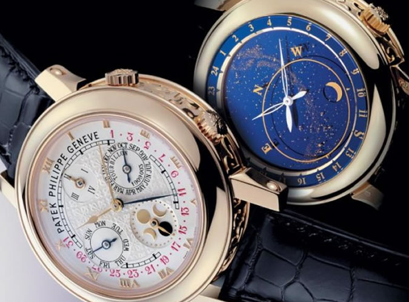
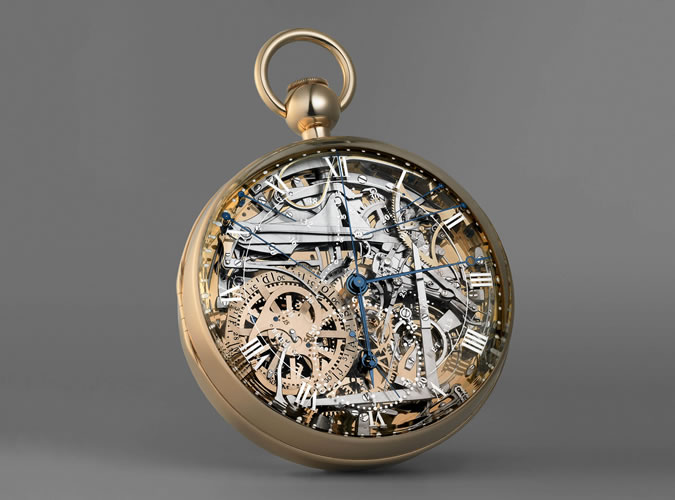
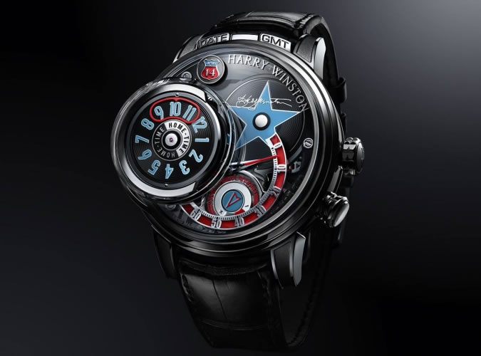
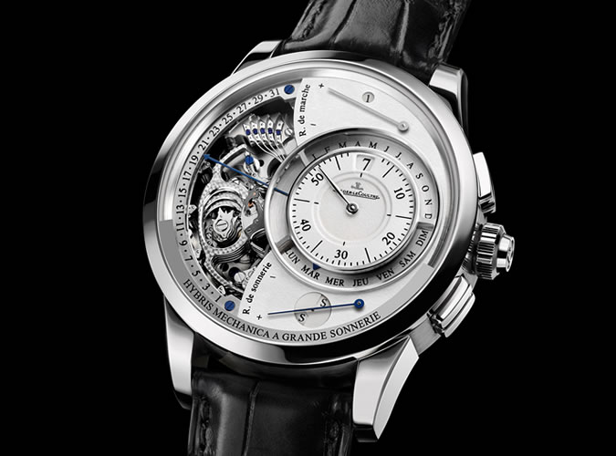

With telling the time now as simple as tapping a home screen, it can be easy to forget that watches are machines of exquisite craftsmanship. Even the simplest of mechanical movements can have a mesmeric effect, with hundreds of individual parts ticking like, well, clockwork. And some manufactures go one cog further.
"Horological complications are viewed by many as the pinnacle of precision manufacturing," says Michael Wilson, in-house watchmaker at American luxury outfit Niall. "And there's a lucrative business for complex novelties, limited editions and extreme complications. Pair this with general brand rivalry, and watchmakers often pursue ultra-complex watches out of a thirst to be the best."
This race to the bottom of your bank balance has resulted in some of the most mind-boggling tickers ever made, most of which would require nothing short of a Rothschild inheritance to afford.
The most elaborate watch ever produced by Patek Philippe, the Sky Moon Tourbillon requires two dials to fit 13 outrageous complications. The most audacious is a celestial chart of the northern hemisphere that allows the wearer to chart the course of the moon and stars, alongside a perpetual calendar, retrograde date and mean solar time function. Because, why not?
The otherworldly piece is housed inside an 18-carat white gold case with intricate enamel hand-carved over 100 painstaking hours.
Vacheron Constantin is to watches what Bentley is to cars: classic, well-crafted and very, very expensive. The Reference 57260 takes this reputation to the next level.
Dubbed the world's most complex piece, this 50mm thick pocket watch boasts 57 individual complications made up from over 2,800 components. To give an idea of how much showing off is going on here, it houses nine astronomical calendar functions, eight Hebrew calendar functions and seven alarms. Like a Bentley, it'll guzzle a small fortune in maintenance costs, too.

Allegedly commissioned by Marie Antoinette's bit on the side in 1783, the Breguet No. 160 is what made the brand a worldwide name.
First, there's the construction: rubies, sapphires, platinum and gold. Which would be extravagant enough alone. But there's also a chronograph, chime function, perpetual calendar, power reserve, minute repeater and even a thermometer.
The landmark piece has survived to this day with a staggering 2300/- price value (which probably explains why it went missing for twenty-four years in 1983).
Okay, so it may look like a crossover between Geneva and Gene Simmons, but Harry Winston's Opus 14 is proof that haute horlogerie isn't just made up of classics.
As if the Americana-themed aesthetic wasn't intricate enough, this 2015 novelty uses a whopping 54.7mm diameter (that's about the height of a golf tee) to house a series of stacked dials that are equal parts monstrous and magnificent. Expect a 'jukebox' automaton-like mechanism, 1,066 individual parts, 124 jewels and over 68 hours of power reserve. Though with a 360,000 price tag, it'll cost a lot more than a Kiss T-shirt off eBay
Jaeger-LeCoultre is a brand for the purists, and it does't get much purer than the Hybris Mechanica à Grande Sonnerie - a culmination of everything the manufacture holds dear.
Overlooking the design (a rare example of Jaeger-LeCoultre going more RoboCop than royal palace), the 2009 novelty packs two separate complications powering a treasure trove of functions: three different chimes (that perform a rendition of Westminster's bells, of course), a tourbillon balance wheel and a skeleton dial. A 'pre-loved' one will cost you 899,0000 on today's market.
